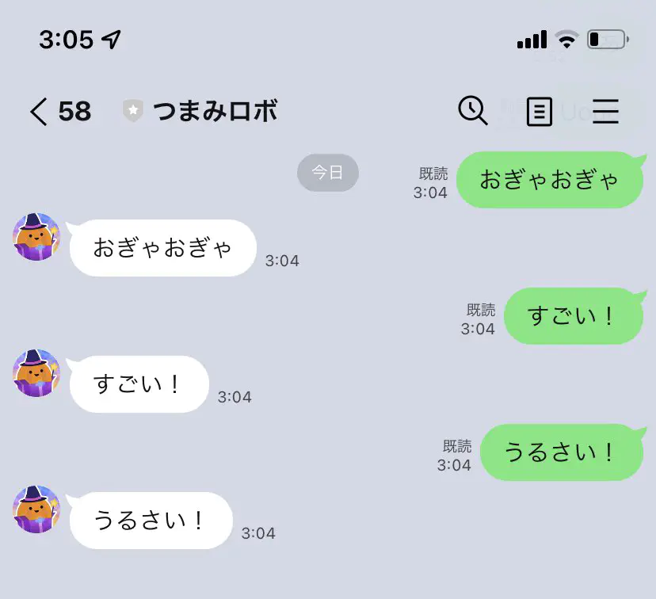

導入までの覚え書き。オウム返しbotを作ることをゴールとします。(雑なので気が向いたら書き直すかもしれない)
LINE Developer に登録する
ここから頑張るとできる。
Messanging API のチャネルを作る
Providerを選んでMessanging API のチャネルを作る。できたら
- チャネルシークレット
- チャネル基本設定のタブにある
- チャネルアクセストークン
- Messaging API設定のタブにある
をメモしておく。あとで使う。
LINE Messaging API SDK for Python の導入
次にここのReadmeの通りに
$ pip install line-bot-sdk
する。Flaskを入れてなかったら
$ pip install flask
もする。
Readmeのサンプルコードをそのままもらって mylinebot.py として保存しておく。
このときさっきメモしたチャネルシークレットとチャネルアクセストークンをサンプルコードの対応する部分に貼り付ける。
Let's Encrypt で証明書の準備
LINEのAPIにはWebhookが必須、かつSSL対応のCallback URLが必要なのでこれをする必要がある。無理におうちでやる必要がないのならばHerokuでやった方が早いらしい。でもおうち環境で完結させたいので頑張る。SSL対応はLet's Encryptを使う。(オレオレ証明書だとLINEくんに弾かれるので)
ここで
- おうちにつながるドメイン
ouchi.trpfrog.netみたいな
- 80番のポート開放
が必要になるので準備しておく。したら次にcertbotを入れる。(Homebrewが必要)
$ brew install certbot
次を実行。
$ sudo certbot certonly --manual
いろいろ聞かれるので従う。最後に「.well_known/acme-challenge/XXXXXX」にYYYYYYを書いたファイルを用意してね、と言われるので準備する。その後、Webサーバを立ち上げて外部からそのファイルにアクセスできるようにする。つまり
http://ouchi.trpfrog.net/.well_known/acme-challenge/XXXXXX
から指定された文字列 YYYYYY のテキストファイルが得られるようにすれば良い。
ここはFlaskを使ってやっても良いのだけれども、いまいち書き方がよくわからなかったので(え？) Dockerでnginx呼び出して殴ってしまった。
$ docker run docker run -d -p 80:80 \
-v $PWD:/usr/share/nginx/html \
--name lets-tmp \
nginx
Webサーバ立ち上げたらつながることを確認してcertbotを続行。うまくいくとどこかに
fullchain.pemprivkey.pem
ができるので、そのパスをメモしておく。
Webhookに使うサーバを起動
ここまでいったら起動する、がサンプルコードのままだと不都合なのでちょっと書き加える。
app.run()
を
app.run(host='自分のローカルIP', port=80, ssl_context=(
'fullchain.pemへのパス',
'privkey.pemへのパス'
))
にする。これで実行する。ouchi.trpfrog.net にアクセスしてコンソールに反応があればOK。
Callback URLを登録
ここまでできたら、LINEのMessaging API設定からWebhookを登録する。
https://ouchi.trpfrog.net/callback
みたいな感じで良い。検証をクリックしてうまくいけば成功。
やってみる
同じくMessaging API設定にQRコードがあるはずなので友達登録してみる。
なんか喋ってオウム返しされたら成功！お疲れ様でした。
